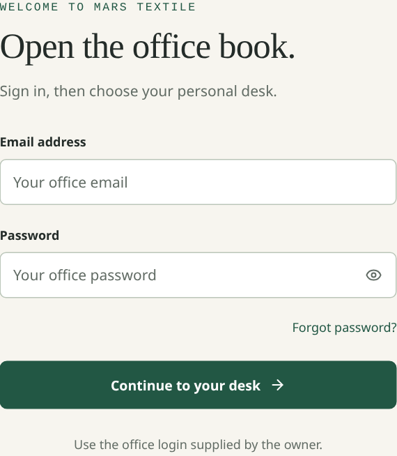
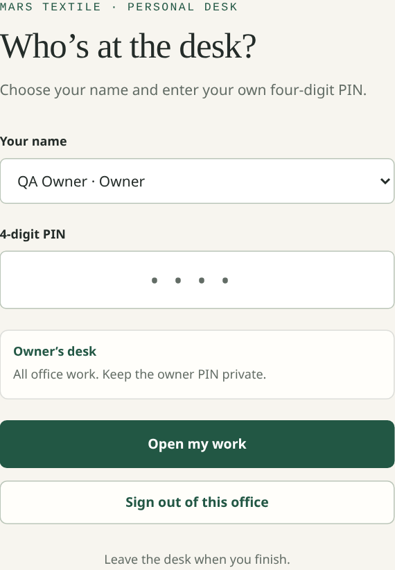
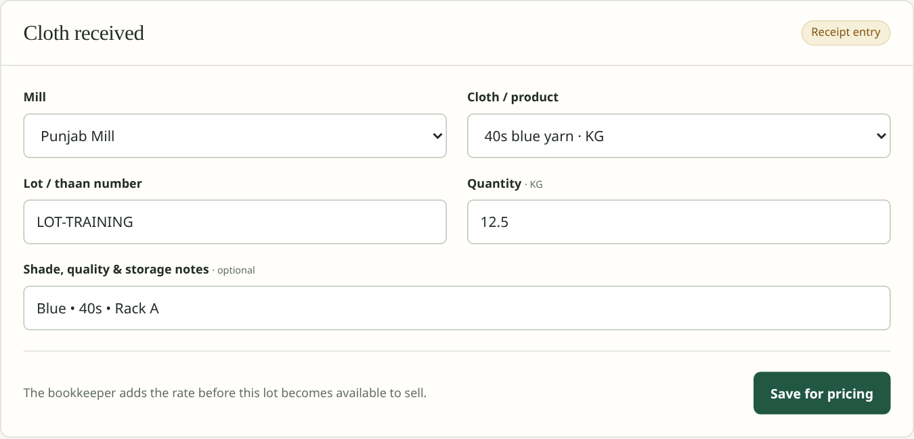
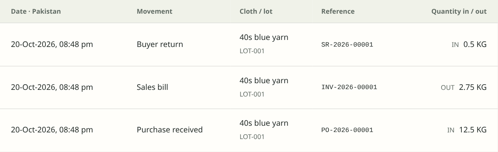
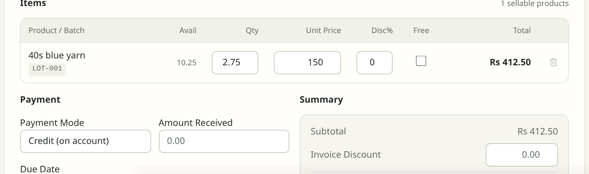
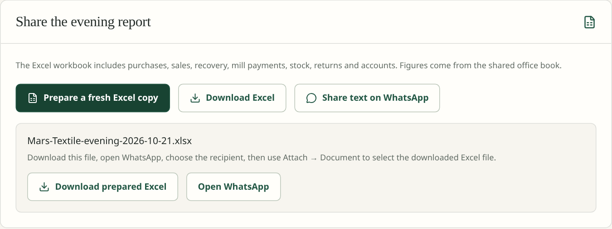

One shared book. A personal desk for each person. Use the office website in a browser. No software installation is needed on staff computers.
Screens use demonstration data from the working application. Example names and figures are for training, not the client’s live accounts. Keep the separate one-page desk card beside each computer.
MARS TEXTILE
Godown Ledger · Office handbook
01 / The whole system
Cloth goes out. Money comes back.
Each posted transaction updates the shared book. Staff do their part once; the owner sees the connected result.
Normal godown trade · physical goods
Supplier
Mill
Purchase and cloth receipt
→
Your office
Godown
Price the lot, then make it available
→
Customer
Buyer
Cash bill or udhar sale
The matching money trail
Recovery from buyers
A receipt reduces what the buyer owes. Record the payment method and reference.
Payments to mills
A payment reduces the mill balance. Track cheques in the PDC register.
Transactions
Purchases · sales · receipts · payments · returns
→
Books & reports
Ledger · balances · stock · evening note
Direct deal: mill → buyer, without entering the godown. Record it through Direct deals, so the buyer and mill accounts are still updated. See page 14.
Posting is the point of change. A receipt waiting for a rate is not yet saleable stock. A typed form or unsent draft is not proof that a bill has posted.
MARS TEXTILE
Godown Ledger · Office handbook
02 / People & trust
Four people. Four different desks.
The office shares one mill login. Each person’s own PIN opens the work appropriate to that person.
GODOWN
Godown keeper
Does: add mills, receive unpriced cloth, view physical lots and stock movement history.
Does not see: prices, buyer dues or books. Report count differences to the owner.
SALES
Salesman
Does: create sales bills, maintain buyers and record recovery.
Does not see: purchase costs, full books or the complete evening workbook.
BOOKS
Bookkeeper
Does: price cloth, record purchases, payments, returns and direct deals; review accounts and reports.
Does not manage: staff PINs, company settings or full backup recovery.
OWNER
Owner
Does: see all work, manage people and PINs, change settings, approve stock corrections and keep backups.
Keep the owner PIN private. Whoever knows it can open the owner’s desk.
Stock corrections: the keeper reports the difference; the owner makes the authorised Stock adjustment. Do not enter a second sale or receipt just to force the quantity to match.
When someone leaves a computer
When someone leaves the business
Press Leave the desk. The next person opens their own work.
The owner disables that person under More → People and pins.
MARS TEXTILE
Godown Ledger · Office handbook
03 / Open your desk
Sign in as the mill. Work as yourself.
Bookmark the office HTTPS website on every computer or phone. Internet access is required.

1 · Shared mill sign-in. Enter the office email and password.

2 · Personal desk. Select your name and enter your own 4-digit PIN.
1
Open the office website
Use the shared mill email and password supplied by the owner.
2
Choose your name and enter your PIN
A wrong PIN does not open the desk. Five wrong attempts lock that person’s PIN for 15 minutes; ask the owner for help.
3
Press Leave the desk when finished
The next person uses their own PIN. Keep the owner’s PIN and all passwords private.
Other office computers stay connected to the same book. Read screens refresh about every five seconds while visible and online. Refresh pauses while you are typing, to preserve the unfinished entry.
MARS TEXTILE
Godown Ledger · Office handbook
04 / Find your work
The six office sections.
Use these menu names in the working release. A person sees only the sections allowed for their desk.
01
Day book
Overview
Alerts
02
Godown & mills
Godown stock · Mills
Cloth products & lots · Price received cloth
Reorder sheet · Stock adjustment (owner)
03
Bills & recovery
Sales bills · Recovery · Buyers
Direct deals · Buyer returns
Quotations · Routes (where permitted)
04
Books & accounts
Accounts & ledger · Bank accounts
PDC cheques · Purchases
Mill accounts · Mill pay schedule · Expenses
05
Evening & reports
Evening note · All reports
Profit & loss · Balance sheet
Sales targets
06
More
People and pins (owner)
Settings & office file (owner)
Office guide
Two mill screens have different purposes.Mills is a physical supplier directory the keeper can use. Mill accounts contains the financial balances and payments for the owner/bookkeeper.
The cloud release needs Internet. Offline billing is not available. If the connection fails, reconnect and check the bill list before entering the bill again.
MARS TEXTILE
Godown Ledger · Office handbook
05 / Before the first real day
Start with agreed figures.
The old manual books do not appear automatically. Choose a start date and approve opening balances before relying on the totals.
01
Cloth products
Add the product name, quality/count, unit, mill and default rates. Use a consistent description the keeper and salesman recognise.
02
Mills & buyers
Create each party once. Check spelling, contact details and area. Avoid duplicate names for the same business.
03
Opening stock
Agree each product, lot, remaining quantity and original cost. Match the software total to the physical godown count.
04
Opening money & dues
Approve cash/bank, buyer receivables and mill payables with the bookkeeper. Do not guess old balances.
Keep each product in its own unit.
KG, metres and thaan are separate measures. Quantities allow up to three decimal places, for example 12.500 KG. A thaan is not automatically converted into metres.
Who checks this? Owner + bookkeeper approve the start date and figures. The keeper confirms physical lots; the salesman confirms buyer details.
A useful opening list
Stock list
Buyer list
Mill list
Product · lot · unit Quantity · cost
Name · opening due Known bill/due dates
Name · opening payable Cheque commitments
MARS TEXTILE
Godown Ledger · Office handbook
06 / Keeper · cloth comes in
Receive the cloth. Leave the rates to the bookkeeper.
A physical receipt starts the process. It does not make the cloth available for sale until it has been priced and posted.
Godown & mills → Godown stock → Cloth received

Actual keeper form · sample values entered for training; this example was not submitted.
1
Select the mill and cloth product
The owner/bookkeeper adds cloth products first. The keeper can add a missing mill under Mills.
2
Enter the lot and measured quantity
Copy the lot/thaan number from the delivery slip. Confirm the product’s unit and add shade, quality or rack notes.
3
Choose Record cloth for pricing
Check the saved confirmation. The receipt goes to Waiting for a rate for the bookkeeper.
Do not receive the same delivery twice. Check the waiting list if the screen or connection interrupted the confirmation.
MARS TEXTILE
Godown Ledger · Office handbook
07 / Bookkeeper · approve the lot
A rate turns a receipt into saleable stock.
Use the mill’s bill to check the cost and quantity before posting. The keeper’s physical receipt and the priced purchase belong to the same delivery.
Godown & mills → Price received cloth
Before
Waiting for a rate
Mill · cloth · lot · quantity Not yet available to sell
→
After posting
Available lot
Cost recorded · mill payable updated Lot can be selected for a bill
Purchase rate per KG
Rs 100.00
12.500 KG received → Rs 1,250.00 cost
Selling rate per KG
Rs 150.00
Default selling rate for this training example
1
Review the pending receipt
Check the mill, product, lot and quantity against the delivery and mill bill.
2
Add purchase and selling rates
Choose Price and post receipt only when the figures are correct.
3
Confirm the stock and mill account
The lot becomes available; the purchase is recorded in the books.
Alternative: enter a full priced purchase. Use Books & accounts → Purchases when you already have the rates. Do not also post the same delivery from the pending receipt list.
Cash / credit / PDC: a purchase can record cash paid or leave the balance owing. Record a post-dated mill cheque separately in the PDC register; do not count it as a second purchase.
MARS TEXTILE
Godown Ledger · Office handbook
08 / Godown · follow the quantity
Stock goes out automatically when a sales bill posts.
There is no second dispatch entry for the keeper. Posted purchases, sales, returns and authorised adjustments build the movement history.
Godown & mills → Godown stock → Stock movement history

Actual quantity-only keeper history · demonstration purchase, sale and buyer return.
12.500 KG
Received and priced.
− 2.750 KG
Deducted by a posted sales bill.
+ 0.500 KG
Added back by a buyer return.
Remaining quantity
Each lot keeps its product’s unit.
10.250 KG
The keeper sees quantities, not money. Use the document reference and lot to explain a movement. The owner/bookkeeper reviews stock valuation separately.
Count does not match? Check pending receipts and recent bills/returns, recount the lot and report the difference. Only the owner posts a stock adjustment.
MARS TEXTILE
Godown Ledger · Office handbook
09 / Salesman · make the bill
Sell the right lot to the right buyer.
The bill updates the buyer’s account and deducts the physical quantity from the selected available lot.
Bills & recovery → Sales bills → New Invoice

Actual bill-entry detail · lot, quantity, selling rate and credit terms. Review the full bill before choosing Create Invoice.
1
Choose the buyer and cloth product
For udhar, use a registered buyer. Check the chosen lot, unit and quantity.
2
Check the selling rate and payment terms
Review discount/tax if applicable. A walk-in bill must be fully paid; a registered buyer can have a credit balance.
3
Post once, then verify the saved bill
Choose Create Invoice. Check its number and totals, then print or save the bill using its Print option.
Cash / fully paid
The bill and receipt record the sale and the money received.
Udhar / on account
The unpaid amount becomes the buyer’s outstanding balance.
An open form does not reserve stock. Another desk may sell first. If stock is no longer available, review the lot; do not force a duplicate bill.
MARS TEXTILE
Godown Ledger · Office handbook
10 / Recovery · collect the udhar
Who owes us? What is overdue?
Recovery starts with the buyer’s balance. Aging helps decide whom to follow up first.
Actual recovery list · sample buyer balance after a sale, general receipt and return.
1
Open the buyer and check the balance
Review bills, returns and previous receipts before collecting.
2
Record what was actually received
Enter the amount, payment method and reference. Record any authorised discount separately; do not enter it as cash.
3
Confirm the new balance
The buyer ledger, Recovery and Aging should agree. Use the document reference when following up.
How the list is prioritised: oldest outstanding due date first, then amount. If a bill has no due date, aging uses the bill date. General credits are applied to the oldest open amount for aging.
Current / 0–30 days31–60 days61–90 days90+ daysOpening / undated
Undated opening balances are shown separately. The software does not invent old invoice dates.
MARS TEXTILE
Godown Ledger · Office handbook
11 / Bookkeeper · pay the mills
A purchase is not the same as a payment.
Record buying once. Then record how the mill is paid, whether immediately or later.
The cheque is tracked in a clearing account, not as available cash.
→
DEPOSITED
Presented / deposited
Update the register when the bank event is confirmed.
If it bounces
Mark it Bounced with a reason. The related receipt/payment is reversed and the buyer due or mill payable is reinstated.
Avoid double counting. Creating the PDC already creates its linked cheque receipt/payment. Do not enter that same cheque again as a separate payment.
Bookkeeper/owner manages the cheque register. Keep bank confirmation and cheque details with the office records.
MARS TEXTILE
Godown Ledger · Office handbook
12 / Exceptions · returns
Start the return from the original document.
Returns use the original document’s remaining returnable quantity and values, so stock and party balances stay connected.
BUYER RETURN
Buyer returns cloth
Open the original sales bill → Return.
Select the original product/lot and the quantity actually returned. The return credits the buyer and adds stock back. A walk-in return can refund cash.
MILL RETURN
Cloth goes back to the mill
Open the original purchase → Return.
Select the original line and quantity sent back. It reduces godown stock and the amount owed to the mill.
A simple buyer-return example
Original sale
2.750 KG
At Rs 150 per KG Bill: Rs 412.50
→
Returned
0.500 KG
Credit: Rs 75.00 Stock restored: 0.500 KG
1
Check the original number
The quantity must belong to that bill/purchase and must not already have been returned.
2
Check the saved return
Confirm its reference, quantity and credit. Review the original document and updated party ledger.
Who handles returns? Owner or bookkeeper. The keeper can confirm the physical quantity; the salesman should refer the request to the authorised person.
Corrections are different from returns. For a wrong posting, ask the owner/bookkeeper to use the permitted correction or reversal with a reason. Do not hide it with an invented payment or stock entry.
MARS TEXTILE
Godown Ledger · Office handbook
13 / Direct deals
Mill straight to buyer. No godown movement.
Use a direct deal only when the goods never enter your godown. The purchase and sale are still recorded in the shared books.
Bills & recovery → Direct deals
From
Mill
Cost and mill payment terms
→
Direct delivery
Buyer
Selling rate and buyer payment terms
Godown stock stays unchanged.
Do not receive these goods into stock and do not make a second ordinary stock sale for the same direct deal.
1
Owner/bookkeeper enters the deal
Choose the mill and buyer. Enter cloth/lot description, quantity, unit, mill cost and selling rate.
2
Choose both payment terms
The buyer can pay cash now or on account. The mill can be paid cash now or left on account.
3
Post and follow the linked records
The sales side appears in sales and recovery. The purchase side updates the mill account and trading cost.
Example: direct cost Rs 10,000 and direct sale Rs 12,000 give Rs 2,000 trading margin before other expenses. Stock remains unchanged.
To reverse a direct deal: owner/bookkeeper reverses linked payments first, then uses Reverse direct deal with a reason. There is no godown stock return for a deal that never entered stock.
MARS TEXTILE
Godown Ledger · Office handbook
14 / Books & accounts
One transaction. Its matching effect in the books.
Posting creates the financial entries behind the scenes. The bookkeeper reviews the resulting balances and investigates differences.
BOOKS
Accounts & ledger
Review the account list and each account’s movements. Use the relevant cash receipt/payment or voucher for the actual transaction.
BANK
Bank accounts
Review bank balances and match movements with the statement. Do not treat a pending cheque as cash in hand.
COSTS
Expenses
Record office expenses with the right category, date, amount and payment method. Keep the supporting slip.
CONTROL
Opening balances & journals
The owner/bookkeeper records approved opening figures and justified accounting corrections. Keep a clear reason and document trail.
Three checks at closing
Report
Question it answers
Trial balance
Do total debits and credits agree?
Profit & loss
What is the trading result after cost of sales and expenses?
Balance sheet
What do we own, what do we owe, and what is the equity?
Profit is not the same as cash. An udhar sale can earn margin while the money is still outstanding. Recovery brings in money but is not a second sale.
Balanced entries are only one check. Also compare physical stock, buyer/mill balances, cash, bank and supporting documents. Investigate a stock/books warning before signing off the day.
MARS TEXTILE
Godown Ledger · Office handbook
15 / Evening close & WhatsApp
Prepare the day. Share the Excel file.
The owner or bookkeeper reviews the evening note and prepares the workbook from the shared office book.
Evening & reports → Evening note

Actual desktop sharing controls · prepare the workbook, then download or use a supported phone share menu.
On a supported phone
Prepare Excel for WhatsApp → Share Excel file → choose WhatsApp and recipient → confirm the attachment and send.
On a laptop / PC
Prepare Excel for WhatsApp → Download prepared Excel → WhatsApp: Attach → Document → select the file and send.
Check before sharing: purchases, sales, returns, recovery, mill payments and any stock/books warning. The workbook is a snapshot; prepare a fresh copy if more entries are posted.
Manual sharing requires you to press Send. “Email the note” opens a text draft; attach the downloaded workbook yourself. Automatic nightly delivery needs separately configured and verified providers and scheduling.
Dates use Pakistan time. Daily activity covers the business day; stock, buyer dues and account balances are current when the workbook is prepared.
MARS TEXTILE
Godown Ledger · Office handbook
16 / Reports & decisions
Choose a report for the question you have.
The report menu is a set of office tools. Access depends on the person’s desk; the full financial reports are for the owner/bookkeeper.
FBR Tax Summary — a summary of entered tax, not electronic filing or an FBR e-invoice.
The evening workbook has 11 tabs.
SummaryPurchasesSalesRecoveryMill PaymentsStockReturnsWaiting for RateBuyer DuesAccountsEvening Note
WHEN PERMITTED
Other office tools
Quotations prepare an offer; they are not a posted sales bill. Routes help organise visits; Alerts and Reorder sheet flag stock follow-up.
BEFORE COMPARING
Read the filters
Check dates, buyer/mill, payment status and other filters before printing or exporting. Different periods produce different totals.
MARS TEXTILE
Godown Ledger · Office handbook
17 / Owner controls
People, office details and a recoverable book.
The owner controls the staff list, company settings and full encrypted backups. These tasks are separate from ordinary stock and sales entry.
More → People and pins · Settings & office file
1
Add each person with the right role
Use People and pins. Give each person a different 4-digit PIN. Reset or disable access when required; keep the owner PIN private.
2
Check the office profile
Under Settings & office file, check company name, address, contact details and the information printed on office documents.
3
Download an encrypted office backup
Use Download encrypted office backup. Keep copies in the agreed safe location, with the recovery key stored separately.
4
Confirm recovery with your support person
A backup validation checks the file; it does not overwrite the live book. A restore is handled by support using a separate empty database.
Excel report
For reading, sharing and office analysis.
It is not a full recovery backup.
Encrypted office backup
For recovering the company book with the correct key and a verified recovery process.
Keep it separately from the key.
Agree the backup routine. Confirm the destination, frequency and responsible person. Do not assume an offsite or nightly backup is active until it has been configured and checked.
Never put passwords, PINs, database addresses, recovery keys or decrypted backups into a staff WhatsApp group.
MARS TEXTILE
Godown Ledger · Office handbook
18 / A complete worked example
Follow one lot through the whole day.
Training example: no tax, discount, opening balances or mill payment. All amounts below relate to this one lot and buyer.
Step
What happens
Quantity / amount
1 · Price the receipt
12.500 KG at Rs 100 per KG
Stock cost Rs 1,250.00 Mill payable Rs 1,250.00
2 · Sell on udhar
2.750 KG at Rs 150 per KG
Bill Rs 412.50 Stock left 9.750 KG
3 · Collect recovery
Receive Rs 100 from the buyer
Buyer due Rs 312.50
4 · Buyer returns cloth
Return 0.500 KG from the original bill
Credit Rs 75.00 Stock left 10.250 KG
Rs 237.50
Buyer still owes 412.50 − 100.00 − 75.00
10.250 KG
Physical stock left 12.500 − 2.750 + 0.500
Rs 1,025.00
Stock at cost 10.250 × 100.00
Check the same result in more than one place.
Buyer ledger, Recovery and Aging: Rs 237.50 due. Godown and stock valuation: 10.250 KG at Rs 1,025.00 cost. Mill account: Rs 1,250.00 payable until it is paid.
Trading result: net sales after the return are Rs 337.50. Net cost of goods sold is Rs 225.00, so gross margin is Rs 112.50 before office expenses. Only Rs 100.00 has been collected in this example.
Use a separate training book for practice. Do not post invented demonstrations into the client’s live accounts.
MARS TEXTILE
Godown Ledger · Office handbook
19 / Daily routine & support
Open cleanly. Close with confidence.
Keep the separate one-page desk card at each computer. Use this page when training a new member of staff.
At the start
Open the website; choose your own PIN.
Check pending cloth and due recovery.
Review the day’s mill payments/cheques.
Before leaving
Confirm saved bills, receipts and returns.
Bookkeeper reviews cash, bank and books.
Owner/bookkeeper shares the evening file.
Owner confirms the backup; leave the desk.
If this happens…
Do this
Internet fails / saving is uncertain
Reconnect. Check the relevant bill/receipt list and document number before retrying. Offline posting is unavailable.
PIN fails or access says Forbidden
Check the selected person. Ask the owner about the PIN or role; do not use the owner PIN as a workaround.
Stock or a buyer balance seems wrong
Check pending receipts, original bills, payments and returns. Record the reference and ask the bookkeeper/owner.
A report or share button is unavailable
Check your role. Full evening Excel is owner/bookkeeper only; desktop WhatsApp needs a downloaded document.
For support, send four useful details.
Screen name · document number · Pakistan time · exact error text. A screenshot helps; exclude passwords, PINs and private recovery keys.
Training order: sign-in → keeper receipt → bookkeeper pricing → sale → recovery → return/direct deal → evening Excel → owner controls. Confirm the real office website, support contact and backup routine during handover. FBR e-invoicing, job-work, multi-godown transfers and automatic delivery activation require separate agreement/setup.